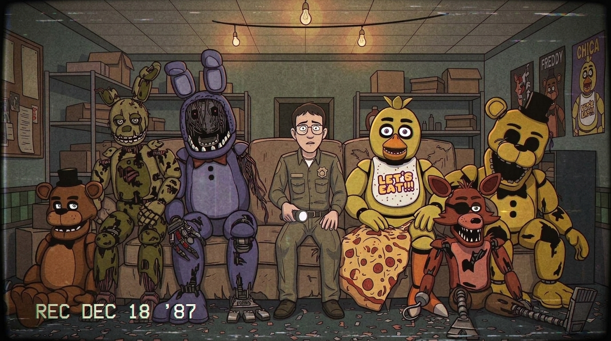

Gameplay estremo di Five Nights at Freddy's. Ogni notte una nuova sfida, ogni video una notte da sopravvivere fino alle 6 del mattino.

Preparati alla sopravvivenza nei seguenti giorni:
Aggiornati automaticamente dal canale YouTube.
Creator appassionato di survival horror e in particolare dell'universo di Five Nights at Freddy's. Ogni trasmissione è un test di resistenza per scoprire i segreti più oscuri nascosti dietro le telecamere di sicurezza.
Canali Ufficiali
@Misticko-968
Live full horror, fan game di FNAF e video di altri videogiochi.
Misticko96
Live full horror e saga di FNAF.
@misticko96
Clip di live e video.